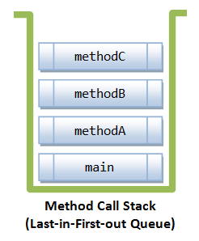
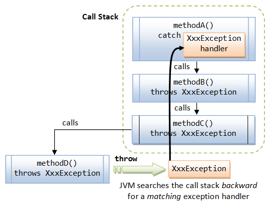

Exception Handling
Introduction
An exception is an abnormal event that arises during the execution of the program and disrupts the normal flow of the program. Abnormality do occur when your program is running. For example, you might expect the user to enter an integer, but receive a text string; or an unexpected I/O error pops up at runtime. What really matters is "what happens after an abnormality occurred?" In other words, "how the abnormal situations are handled by your program." If these exceptions are not handled properly, the program terminates abruptly and may cause severe consequences. For example, the network connections, database connections and files may remain opened; database and file records may be left in an inconsistent state.
Java has a built-in mechanism for handling runtime errors, referred to as exception handling. This is to ensure that you can write robust programs for mission-critical applications.
Older programming languages such as C have some drawbacks in exception handing. For example, suppose the programmer wishes to open a file for processing:
- The programmers are not made to aware of the exceptional conditions. For example, the file to be opened may not necessarily exist. The programmer therefore did not write codes to test whether the file exists before opening the file.
- Suppose the programmer is aware of the exceptional conditions, he/she might decide to finish the main logic first, and write the exception handling codes later – this "later", unfortunately, usually never happens. In other words, you are not force to write the exception handling codes together with the main logic.
- Suppose the programmer decided to write the exception handling codes, the exception handling codes intertwine with the main logic in many if-else statements. This makes main logic hard to follow and the entire program hard to read. For example,
if (file exists) { open file; while (there is more records to be processed) { if (no IO errors) { process the file record } else { handle the errors } } if (file is opened) close the file; } else { report the file does not exist; }
Java overcomes these drawbacks by building the exception handling into the language rather than leaving it to the discretion of the programmers:
- You will be informed of the exceptional conditions that may arise in calling a method - Exceptions are declared in the method's signature.
- You are forced to handle exceptions while writing the main logic and cannot leave them as an afterthought - Your program cannot compiled without the exception handling codes.
- Exception handling codes are separated from the main logic - Via the
try-catch-finallyconstruct.
Let's look into these three points in more details.
Point 1: Exceptions must be Declared
As an example, suppose that you want to use a java.util.Scanner to perform formatted input from a disk file. The signature of the Scanner's constructor with a File argument is given as follows:
public Scanner(File source) throws FileNotFoundException;
The method's signature informs the programmers that an exceptional condition "file not found" may arise. By declaring the exceptions in the method's signature, programmers are made to aware of the exceptional conditions in using the method.
Point 2: Exceptions must be Handled
If a method declares an exception in its signature, you cannot use this method without handling the exception - you can't compile the program.
Example 1: The program did not handle the exception declared, resutled in compilation error.
import java.util.Scanner;
import java.io.File;
public class ScannerFromFile {
public static void main(String[] args) {
Scanner in = new Scanner(new File("test.in"));
// do something ...
}
}
ScannerFromFile.java:5: unreported exception java.io.FileNotFoundException; must be caught or declared to be thrown
Scanner in = new Scanner(new File("test.in"));
^
To use a method that declares an exception in its signature, you MUST either:
- provide exception handling codes in a "
try-catch" or "try-catch-finally" construct, or - not handling the exception in the current method, but declare the exception to be thrown up the call stack for the next higher-level method to handle.
Example 2: Catch the exception via a "try-catch" (or "try-catch-finally") construct.
import java.util.Scanner; import java.io.File; import java.io.FileNotFoundException; public class ScannerFromFileWithCatch { public static void main(String[] args) { try { Scanner in = new Scanner(new File("test.in")); // do something if no exception ... // you main logic here in the try-block } catch (FileNotFoundException ex) { // error handling separated from the main logic ex.printStackTrace(); // print the stack trace } } }
If the file cannot be found, the exception is caught in the catch-block. In this example, the error handler simply prints the stack trace, which provides useful information for debugging. In some situations, you may need to perform some clean-up operations, or open another file instead. Take note that the main logic in the try-block is separated from the error handling codes in the catch-block.
Example 3: You decided not to handle the exception in the current method, but throw the exception up the call stack for the next higher-level method to handle.
import java.util.Scanner; import java.io.File; import java.io.FileNotFoundException; public class ScannerFromFileWithThrow { public static void main(String[] args) throws FileNotFoundException { // to be handled by next higher-level method Scanner in = new Scanner(new File("test.in")); // this method may throw FileNotFoundException // main logic here ... } }
In this example, you decided not to handle the FileNotFoundException thrown by the Scanner(File) method (with try-catch). Instead, the caller of Scanner(File) - the main() method - declares in its signature "throws FileNotFoundException", which means that this exception will be thrown up the call stack, for the next higher-level method to handle. In this case, the next higher-level method of main() is the JVM, which simply terminates the program and prints the stack trace.
Point 3: Main logic is separated from the exception handling codes
As shown in Example 2, the main logic is contained in the try-block, while the exception handling codes are kept in the catch-block(s) separated from the main logic. This greatly improves the readability of the program.
For example, a Java program for file processing could be as follows:
try {
// Main logic here
open file;
process file;
......
} catch (FileNotFoundException ex) { // Exception handlers below
// Exception handler for "file not found"
} catch (IOException ex) {
// Exception handler for "IO errors"
} finally {
close file; // always try to close the file
}
Method Call Stack
A typical application involves many levels of method calls, which is managed by a so-called method call stack. A stack is a last-in-first-out queue. In the following example, main() method invokes methodA(); methodA() calls methodB(); methodB() calls methodC().
1 2 3 4 5 6 7 8 9 10 11 12 13 14 15 16 17 18 19 20 21 22 23 24 |
public class MethodCallStackDemo {
public static void main(String[] args) {
System.out.println("Enter main()");
methodA();
System.out.println("Exit main()");
}
public static void methodA() {
System.out.println("Enter methodA()");
methodB();
System.out.println("Exit methodA()");
}
public static void methodB() {
System.out.println("Enter methodB()");
methodC();
System.out.println("Exit methodB()");
}
public static void methodC() {
System.out.println("Enter methodC()");
System.out.println("Exit methodC()");
}
}
|
Enter main() Enter methodA() Enter methodB() Enter methodC() Exit methodC() Exit methodB() Exit methodA() Exit main()
As seen from the output, the sequence of events is:
- JVM invoke the
main(). main()pushed onto call stack, before invokingmethodA().methodA()pushed onto call stack, before invokingmethodB().methodB()pushed onto call stack, before invokingmethodC().methodC()completes.methodB()popped out from call stack and completes.methodA()popped out from the call stack and completes.main()popped out from the call stack and completes. Program exits.
suppose that we modify methodC() to carry out a "divide-by-0" operation, which triggers a ArithmeticException:
public static void methodC() {
System.out.println("Enter methodC()");
System.out.println(1 / 0); // divide-by-0 triggers an ArithmeticException
System.out.println("Exit methodC()");
}
The exception message clearly shows the method call stack trace with the relevant statement line numbers:
Enter main()
Enter methodA()
Enter methodB()
Enter methodC()
Exception in thread "main" java.lang.ArithmeticException: / by zero
at MethodCallStackDemo.methodC(MethodCallStackDemo.java:22)
at MethodCallStackDemo.methodB(MethodCallStackDemo.java:16)
at MethodCallStackDemo.methodA(MethodCallStackDemo.java:10)
at MethodCallStackDemo.main(MethodCallStackDemo.java:4)
MethodC() triggers an ArithmeticException. As it does not handle this exception, it popped off from the call stack immediately. MethodB() also does not handle this exception and popped off the call stack. So does methodA() and main() method. The main() method passes back to JVM, which abruptly terminates the program and print the call stack trace, as shown.
Exception & Call Stack
When an exception occurs inside a Java method, the method creates an Exception object and passes the Exception object to the JVM (in Java term, the method "throw" an Exception). The Exception object contains the type of the exception, and the state of the program when the exception occurs. The JVM is responsible for finding an exception handler to process the Exception object. It searches backward through the call stack until it finds a matching exception handler for that particular class of Exception object (in Java term, it is called "catch" the Exception). If the JVM cannot find a matching exception handler in all the methods in the call stack, it terminates the program.
This process is illustrated as follows. Suppose that methodD() encounters an abnormal condition and throws a XxxException to the JVM. The JVM searches backward through the call stack for a matching exception handler. It finds methodA() having a XxxException handler and passes the exception object to the handler. Notice that methodC() and methodB() are required to declare "throws XxxException" in their method signatures in order to compile the program.
Exception Classes - Throwable, Error, Exception & RuntimeException
The figure below shows the hierarchy of the Exception classes. The base class for all Exception objects is java.lang.Throwable, together with its two subclasses java.lang.Exception and java.lang.Error.

- The
Errorclass describes internal system errors (e.g.,VirtualMachineError,LinkageError) that rarely occur. If such an error occurs, there is little that you can do and the program will be terminated by the Java runtime. - The
Exceptionclass describes the error caused by your program (e.g.FileNotFoundException,IOException). These errors could be caught and handled by your program (e.g., perform an alternate action or do a graceful exit by closing all the files, network and database connections).
Checked vs. Unchecked Exceptions
As illustrated, the subclasses of Error and RuntimeException are known as unchecked exceptions. These exceptions are not checked by the compiler, and hence, need not be caught or declared to be thrown in your program. This is because there is not much you can do with these exceptions. For example, a "divide by 0" triggers an ArithmeticException, array index out-of-bound triggers an ArrayIndexOutOfBoundException, which are really programming logical errors that shall be been fixed in compiled-time, rather than leaving it to runtime exception handling.
All the other exception are called checked exceptions. They are checked by the compiler and must be caught or declared to be thrown.
Exception Handling Operations
Five keywords are used in exception handling: try, catch, finally, throws and throw (take note that there is a difference between throw and throws).
Java’s exception handling consists of three operations:
- Declaring exceptions;
- Throwing an exception; and
- Catching an exception.
Declaring Exceptions
A Java method must declare in its signature the types of checked exception it may "throw" from its body, via the keyword "throws".
For example, suppose that methodD() is defined as follows:
public void methodD() throws XxxException, YyyException { // method body throw XxxException and YyyException }
The method's signature indicates that running methodD() may encounter two checked exceptions: XxxException and YyyException. In other words, some of the abnormal conditions inside methodD() may trigger XxxException or YyyException.
Exceptions belonging to Error, RuntimeException and their subclasses need not be declared. These exceptions are called unchecked exceptions because they are not checked by the compiler.
Throwing an Exception
When a Java operation encounters an abnormal situation, the method containing the erroneous statement shall create an appropriate Exception object and throw it to the Java runtime via the statement "throw XxxException". For example,
public void methodD() throws XxxException, YyyException { // method's signature // method's body ... ... // XxxException occurs if ( ... ) throw new XxxException(...); // construct an XxxException object and throw to JVM ... // YyyException occurs if ( ... ) throw new YyyException(...); // construct an YyyException object and throw to JVM ... }
Note that the keyword to declare exception in the method's signature is "throws" and the keyword to throw an exception object within the method's body is "throw".
Catching an Exception
When a method throws an exception, the JVM searches backward through the call stack for a matching exception handler. Each exception handler can handle one particular class of exception. An exception handler handles a specific class can also handle its subclasses. If no exception handler is found in the call stack, the program terminates.
For example, suppose methodD() declares that it may throw XxxException and YyyException in its signature, as follows:
public void methodD() throws XxxException, YyyException { ...... }
To use methodD() in your program (says in methodC()), you can either:
- Wrap the call of
methodD()inside a try-catch (or try-catch-finally) as follows. Each catch-block can contain an exception handler for one type of exception.public void methodC() { // no exception declared ...... try { ...... // uses methodD() which declares XxxException & YyyException methodD(); ...... } catch (XxxException ex) { // Exception handler for XxxException ...... } catch (YyyException ex} { // Exception handler for YyyException ...... } finally { // optional // These codes always run, used for cleaning up ...... } ...... } - Suppose that
methodC()who callsmethodD()does not wish to handle the exceptions (via a try-catch), it can declare these exceptions to be thrown up the call stack in its signature as follows:public void methodC() throws XxxException, YyyException { // for next higher-level method to handle ... // uses methodD() which declares "throws XxxException, YyyException" methodD(); // no need for try-catch ... }
In this case, if aXxxExceptionorYyyExceptionis thrown bymethodD(), JVM will terminatemethodD()as well asmethodC()and pass the exception object up the call stack to the caller ofmethodC().
try-catch-finally
The syntax of try-catch-finally is:
try {
// main logic, uses methods that may throw Exceptions
......
} catch (Exception1 ex) {
// error handler for Exception1
......
} catch (Exception2 ex) {
// error handler for Exception1
......
} finally { // finally is optional
// clean up codes, always executed regardless of exceptions
......
}
If no exception occurs during the running of the try-block, all the catch-blocks are skipped, and finally-block will be executed after the try-block. If one of the statements in the try-block throws an exception, the Java runtime ignores the rest of the statements in the try-block, and begins searching for a matching exception handler. It matches the exception type with each of the catch-blocks sequentially. If a catch-block catches that exception class or catches a superclass of that exception, the statement in that catch-block will be executed. The statements in the finally-block are then executed after that catch-block. The program continues into the next statement after the try-catch-finally, unless it is pre-maturely terminated or branch-out.
If none of thecatch-block matches, the exception will be passed up the call stack. The current method executes the finally clause (if any) and popped off the call stack. The caller follows the same procedures to handle the exception.
The finally block is almost certain to be executed, regardless of whether or not exception occurs (unless JVM encountered a severe error or a System.exit() is called in the catch block).
Example 1
1 2 3 4 5 6 7 8 9 10 11 12 13 14 15 16 17 18 19 20 |
import java.util.Scanner;
import java.io.File;
import java.io.FileNotFoundException;
public class TryCatchFinally {
public static void main(String[] args) {
try { // main logic
System.out.println("Start of the main logic");
System.out.println("Try opening a file ...");
Scanner in = new Scanner(new File("test.in"));
System.out.println("File Found, processing the file ...");
System.out.println("End of the main logic");
} catch (FileNotFoundException ex) { // error handling separated from the main logic
System.out.println("File Not Found caught ...");
} finally { // always run regardless of exception status
System.out.println("finally-block runs regardless of the state of exception");
}
// after the try-catch-finally
System.out.println("After try-catch-finally, life goes on...");
}
}
|
This is the output when the FileNotFoundException triggered:
Start of the main logic Try opening a file ... File Not Found caught ... finally-block runs regardless of the state of exception After try-catch-finally, life goes on...
This is the output when no exception triggered:
Start of the main logic Try opening a file ... File Found, processing the file ... End of the main logic finally-block runs regardless of the state of exception After try-catch-finally, life goes on...
Example 2
1 2 3 4 5 6 7 8 9 10 11 12 13 14 15 16 17 18 19 20 |
public class MethodCallStackDemo {
public static void main(String[] args) {
System.out.println("Enter main()");
methodA();
System.out.println("Exit main()");
}
public static void methodA() {
System.out.println("Enter methodA()");
try {
System.out.println(1 / 0);
// A divide-by-0 triggers an ArithmeticException - an unchecked exception
// This method does not catch ArithmeticException
// It runs the "finally" and popped off the call stack
} finally {
System.out.println("finally in methodA()");
}
System.out.println("Exit methodA()");
}
}
|
Enter main()
Enter methodA()
finally in methodA()
Exception in thread "main" java.lang.ArithmeticException: / by zero
at MethodCallStackDemo.methodA(MethodCallStackDemo.java:11)
at MethodCallStackDemo.main(MethodCallStackDemo.java:4)
try-catch-finally
- A try-block must be accompanied by at least one catch-block or a finally-block.
- You can have multiple catch-blocks. Each catch-block catches only one type of exception.
- A catch block requires one argument, which is a
throwableobject (i.e., a subclass ofjava.lang.Throwable), as follows:catch (AThrowableSubClass aThrowableObject) { // exception handling codes } - You can use the following methods to retrieve the type of the exception and the state of the program from the
Throwableobject:printStackTrace(): Prints thisThrowableand its call stack trace to the standard error streamSystem.err. The first line of the outputs contains the result oftoString(), and the remaining lines are the stack trace. This is the most common handler, if there is nothing better that you can do. For example,try { Scanner in = new Scanner(new File("test.in")); // process the file here ...... } catch (FileNotFoundException ex) { ex.printStackTrace(); }You can also useprintStackTrace(PrintStream s)orprintStackTrace(PrintWriter s).getMessage(): Returns themessagespecified if the object is constructed using constructorThrowable(String message).toString(): Returns a short description of thisThrowableobject, consists of the name of the class, a colon':', and a message fromgetMessage().
- A catch block catching a specific exception class can also catch its subclasses. Hence,
catch(Exception ex) {...}catches all kinds of exceptions. However, this is not a good practice as the exception handler that is too general may unintentionally catches some subclasses' exceptions it does not intend to. - The order of catch-blocks is important. A subclass must be caught (and placed in front) before its superclass. Otherwise, you receive a compilation error "exception
XxxExceptionhas already been caught". - The finally-block is meant for cleanup code such as closing the file, database connection regardless of whether the try block succeeds. The finally block is always executed (unless the catch-block pre-maturely terminated the current method).
What if I really don't care about the exceptions
Certainly not advisable other than writing toy programs. But to bypass the compilation error messages triggered by methods declaring unchecked exceptions, you could declare "throws Exception" in your main() (and other methods), as follows:
public static void main(String[] args) throws Exception { // throws all subclass of Exception to JRE
Scanner in = new Scanner(new File("test.in")); // declares "throws FileNotFoundException"
......
// other exceptions
}
Overriding and Overloading Methods
An overriding method must have the same argument list and return-type (or subclass of its original from JDK 1.5). An overloading method must have different argument list, but it can have any return-type.
An overriding method cannot have more restricted access. For example, a method with protected access may be overridden to have protected or public access but not private or default access. This is because an overridden method is considered to be a replacement of its original, hence, it cannot be more restrictive.
An overriding method cannot declare exception types that were not declared in its original. However, it may declare exception types are the same as, or subclass of its original. It needs not declare all the exceptions as its original. It can throw fewer exceptions than the original, but not more.
An overloading method must be differentiated by its argument list. It cannot be differentiated by the return-type, the exceptions, and the modifier, which is illegal. It can have any return-type, access modifier, and exceptions, as long as it can be differentiated by the argument list.
Common Exception Classes
ArrayIndexOutOfBoundsException: thrown by JVM when your code uses an array index, which is is outside the array's bounds. For example,
int[] anArray = new int[3]; System.out.println(anArray[3]);
Exception in thread "main" java.lang.ArrayIndexOutOfBoundsException: 3
NullPointerException: thrown by the JVM when your code attempts to use a null reference where an object reference is required. For example,
String[] strs = new String[3]; System.out.println(strs[0].length());
Exception in thread "main" java.lang.NullPointerException
NumberFormatException: Thrown programmatically (e.g., by Integer.parseInt()) when an attempt is made to convert a string to a numeric type, but the string does not have the appropriate format. For example,
Integer.parseInt("abc");
Exception in thread "main" java.lang.NumberFormatException: For input string: "abc"
ClassCastException: thrown by JVM when an attempt is made to cast an object reference fails. For example,
Object o = new Object(); Integer i = (Integer)o;
Exception in thread "main" java.lang.ClassCastException: java.lang.Object cannot be cast to java.lang.Integer
IllegalArgumentException: thrown programmatically to indicate that a method has been passed an illegal or inappropriate argument. You could re-use this exception for your own methods.
IllegalStateException: thrown programmatically when a method is invoked and the program is not in an appropriate state for that method to perform its task. This typically happens when a method is invoked out of sequence, or perhaps a method is only allowed to be invoked once and an attempt is made to invoke it again.
NoClassDefFoundError: thrown by the JVM or class loader when the definition of a class cannot be found. Prior to JDK 1.7, you will see this exception call stack trace if you try to run a non-existent class. JDK 1.7 simplifies the error message to "Error: Could not find or load main class xxx".
Creating Your Own Exception Classes
You should try to reuse the Exception classes provided in the JDK, e.g., IndexOutOfBoundException, ArithmeticException, IOException, and IllegalArugmentException. But you can always create you own Exception classes by extending from the class Exception or one of its subclasses.
Note that RuntimeException and its subclasses are not checked by the compiler and need not be declared in the method's signature. Therefore, use them with care, as you will not be informed and may not be aware of the exceptions that may occur by using that method (and therefore do not have the proper exception handling codes) – a bad software engineering practice.
Example
1 2 3 4 5 6 |
// Create our own exception class by subclassing Exception. This is a checked exception public class MyMagicException extends Exception { public MyMagicException(String message) { //constructor super(message); } } |
1 2 3 4 5 6 7 8 9 10 11 12 13 14 15 16 17 18 19 |
public class MyMagicExceptionTest {
// This method "throw MyMagicException" in its body.
// MyMagicException is checked and need to be declared in the method's signature
public static void magic(int number) throws MyMagicException {
if (number == 8) {
throw (new MyMagicException("you hit the magic number"));
}
System.out.println("hello"); // skip if exception triggered
}
public static void main(String[] args) {
try {
magic(9); // does not trigger exception
magic(8); // trigger exception
} catch (MyMagicException ex) { // exception handler
ex.printStackTrace();
}
}
}
|
The output is as follows:
hello
MyMagicException: you hit the magic number
at MyMagicExceptionTest.magic(MyMagicExceptionTest.java:6)
at MyMagicExceptionTest.main(MyMagicExceptionTest.java:14)
Assertion (JDK 1.4)
JDK 1.4 introduced a new keyword called assert, to support the so-called assertion feature. Assertion enables you to test your assumptions about your program logic (such as pre-conditions, post-conditions, and invariants). Each assertion contains a boolean expression that you believe will be true when the program executes. If it is not true, the JVM will throw an AssertionError. This error signals you that you have an invalid assumption that needs to be fixed. Assertion is much better than using if-else statements, as it serves as proper documentation on your assumptions, and it does not carry performance liability in the production environment (to be discussed later).
The assert statement has two forms:
assert booleanExpr; assert booleanExpr : errorMessageExpr;
When the runtime execute the assertion, it first evaluates the booleanExpr. If the value is true, nothing happens. If it is false, the runtime throws an AssertionError, using the no-argument constructor (in the first form) or errorMessageExpr as the argument to the constructor (in the second form). If an object is passed as the errorMessageExpr, the object's toString() will be called to obtain the message string.
Assertion is useful in detecting bugs. It also serves to document the inner workings of you program (e.g., pre-conditions and post-conditions) and enhances the maintainability.
One good candidate for assertion is the switch-case statement where the programmer believes that one of the cases will be selected, and the default-case is not plausible. For example,
1 2 3 4 5 6 7 8 9 10 11 12 13 14 |
public class AssertionSwitchTest {
public static void main(String[] args) {
char operator = '%'; // assumed either '+', '-', '*', '/' only
int operand1 = 5, operand2 = 6, result = 0;
switch (operator) {
case '+': result = operand1 + operand2; break;
case '-': result = operand1 - operand2; break;
case '*': result = operand1 * operand2; break;
case '/': result = operand1 / operand2; break;
default: assert false : "Unknown operator: " + operator; // not plausible here
}
System.out.println(operand1 + " " + operator + " " + operand2 + " = " + result);
}
}
|
Assertion, by default, are disabled to ensure that they are not a performance liability in the production environment. To enable assertion, use the runtime command-line option –enableassertions (or –ea).
In the above example, "assert false" always triggers an AssertionError. However, the output is different, depending on whether assertion is enabled or disabled.
> javac AssertionSwitchTest.java // no option needed to compile > java -ea AssertionSwitchTest // enable assertion
Exception in thread "main" java.lang.AssertionError: %
at AssertionSwitchTest.main(AssertionSwitchTest.java:11)
> java AssertionSwitchTest // assertion disable by default
5 % 6 = 0
In the above example, since the "assert false" always triggers an AssertionError, you could choose to throw an AssertionError. "throw" is always enabled during runtime.
default: throw new AssertionError("Unknown operator: " + operator);
Another usage of assertion is to assert "internal invariants". In other words, to assert the possible values of an internal variable. For example,
1 2 3 4 5 6 7 8 9 |
public class AssertionTest {
public static void main(String[] args) {
int number = -5; // assumed number is not negative
// This assert also serve as documentation
assert (number >= 0) : "number is negative: " + number;
// do something
System.out.println("The number is " + number);
}
}
|
> java -ea AssertionSwitchTest // enable assertion
Exception in thread "main" java.lang.AssertionError: -5
at AssertionTest.main(AssertionTest.java:5)
Assertion can be used for verifying:
- Internal Invariants: Assert that a value is within a certain constraint, e.g.,
assert x > 0. - Class Invariants: Assert that an object's state is within a constraint. What must be true about each instance of a class before or after the execution of a method? Class invariants are typically verified via
private booleanmethod, e.g., anisValid()method to check if aCircleobject has a positive radius. - Control-Flow Invariants: Assert that a certain location will not be reached. For example, the
defaultclause of aswitch-casestatement. - Pre-conditions of methods: What must be true when a method is invoked? Typically expressed in terms of the method's arguments or the states of its objects.
- Post-conditions of methods: What must be true after a method completes successfully?
Pre-conditions of public methods
Assertion should not be used to check the validity of the arguments (pre-condition) passed into "public" method. It is because public methods are exposed and anyone could call this method with an invalid argument. Instead, use a if statement to check the argument and throw an IllegalArgumentException otherwise. On the other hand, private methods are under your sole control and it is appropriate to assert the pre-conditions. For example,
// Constructor of Time class
public Time(int hour, int minute, int second) {
if(hour < 0 || hour > 23 || minute < 0 || minute > 59 || second < 0 || second > 59) {
throw new IllegalArgumentException();
}
this.hour = hour;
this.minute = minute;
this.second = second;
}
Example
[TODO] Example on pre-condition (private method), post-condition, and class invariant.
LINK TO JAVA REFERENCES & RESOURCES